***My photographic journey, up until 201*9.**
A few years back I bought a flatbed scanner which could scan strips of negative and positive film and borrowed all my parents’ photo albums, all the negatives I could find, and several boxes of slides with great plans to digitize all of my family’s photographic history. I spent several weeks scanning, cropping, and adjusting the content. To my surprise, I was photographed playing with cameras as a kid which is great for stories like this. The project is still not finished though, but it’s interesting to see how my childhood documented by these photos might have an impact on my decisions and preferences related to photography today.
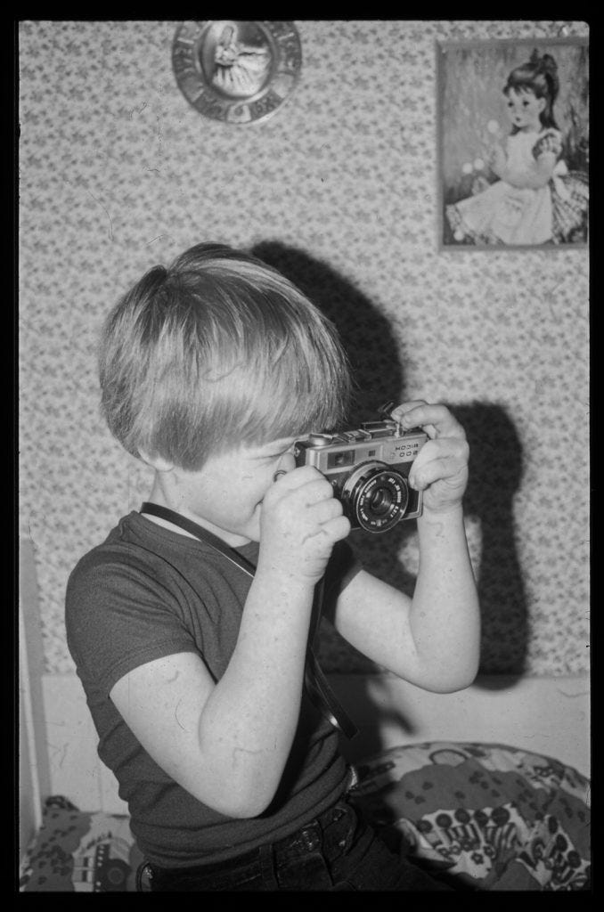
I guess I’ve always been attracted to photography and movies. My father had several cameras and in addition to the Ricoh pictured above, he also had a Pentax with a few lenses.
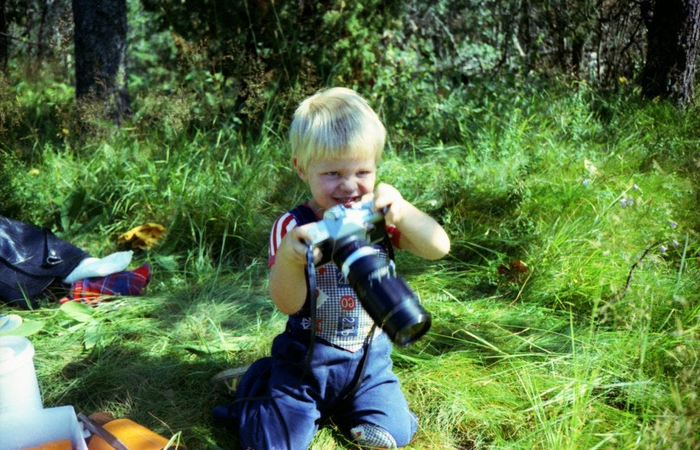
The fact that my father had that Pentax would probably influence my purchase decision later in life as my first analog film camera was a Pentax Z20.
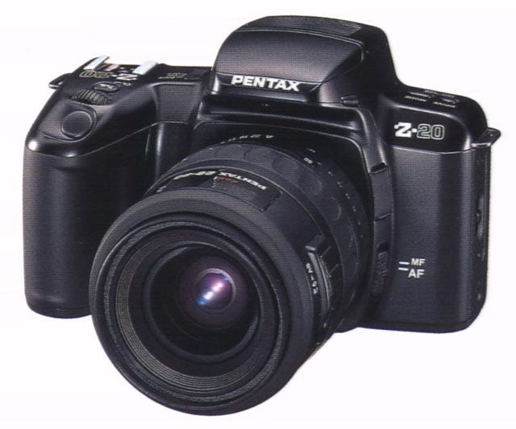
Me and my friend Eskil Hinrichsen both bought this camera when I was about 17–18 years old. Eskil even developed his own films in his basement, in a tiny room not sized for one person, even less so for two. At that point, I was not that serious about photography, but we took a lot of photos and this period would also influence my photography preferences as I got older. Several of the photos we took were inspired by movies, mostly dark and moody films like Seven and the notorious Man Bites Dog, and to this day I look for that analog film quality over digital sharpness in my photos. All the photos below were shot and developed by Eskil.
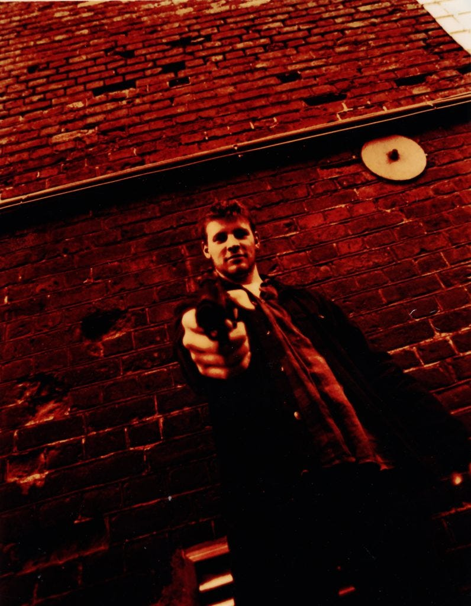
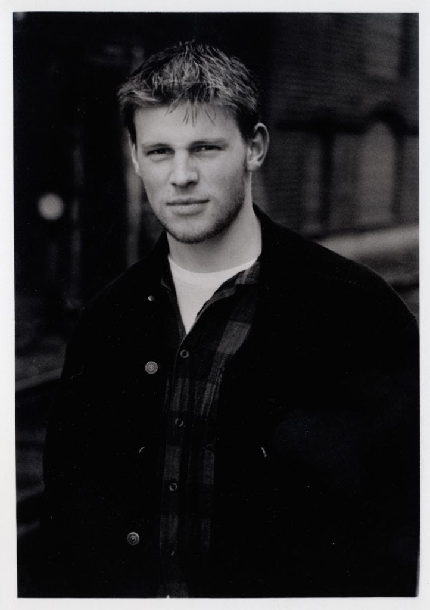
After a rather intense period of photographic activities, it suddenly stopped and I didn’t pick up a camera for several years. In 1996 I was given a Canon AV-1 camera found at the garbage dump. I loaded it with a roll of black & white film, used it during the summer, developed the film but forgot the whole thing. For years.
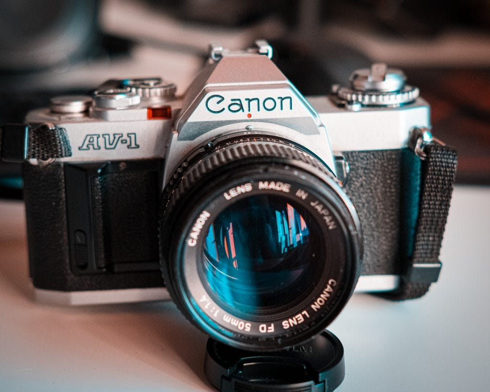
I didn’t take any photos until my girlfriend (now wife) got pregnant and I decided to document the process. The digital cameras were in their infancy and by today’s standard, they weren’t particularly good. My first digital camera was an HP PhotoSmart 850. With a whopping 4.1 megapixels and still impressive 56x zoom it produced mediocre pictures. At best.
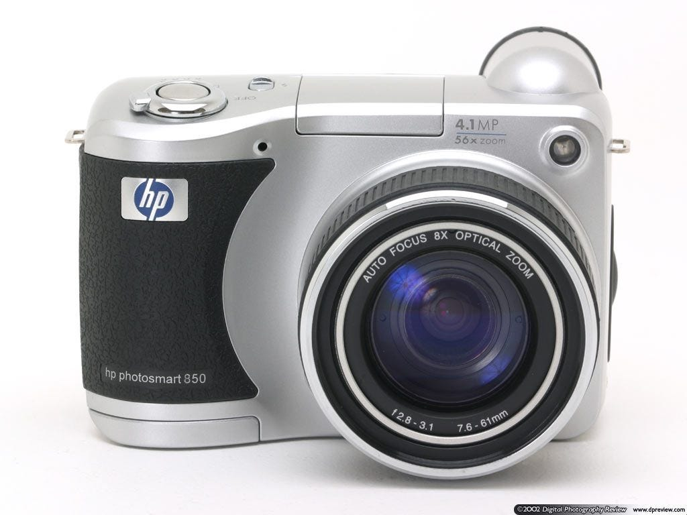
I used that camera for about a year and got inspired again and spent a small fortune on Nikon D70. Armed with a proper DSLR I finally fell really in love with photography. The following years we took several thousand photos each year and a few years later I even upgraded to Nikon D90 and purchased my first prime, the Nikon AF-S 50mm f/1.8. Primes have a special place in my heart and that will be very obvious later on.
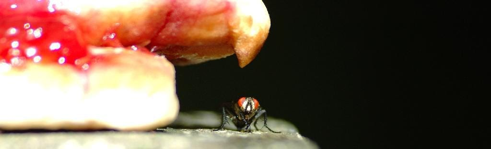
We used the Nikons until the shutter mechanism broke on both of them. The D90 was sent to repairs and lasted a few years until the autofocus stopped working. Once again my photographic interest died away and this is very visible in my Lightroom catalog which counts just a few thousand photos spanning several years around this period.
At this point, YouTube became increasingly popular. Vlogging became a thing. Everybody and his uncle were vlogging. I was a huge Casey Neistat fan and bought a Panasonic G7, a Gorilla Pod, and spent a lot of time scanning [Finn.no](https://www.finn.no) for used photo gear. Soon I had several M43 lenses, a few Røde microphones and I decided to use my interest in homebrewed beer as subject matter for my YouTube channel; [SinnaBryggern ](http://youtube.com/sinnabryggern)was born. It was pretty basic stuff, I was terribly uncomfortable in front of the camera and it shows. Still, I was pretty happy to get the experience, and soon I bought the Panasonic GH5, an indie filmmaker’s dream.
The specs are still among the best-mixed shooter cameras, with better stabilization than most and video features only a few can match. But the low light capabilities and noise when cropping in was a problem for me as a photographer. And the autofocus was crappy for video.
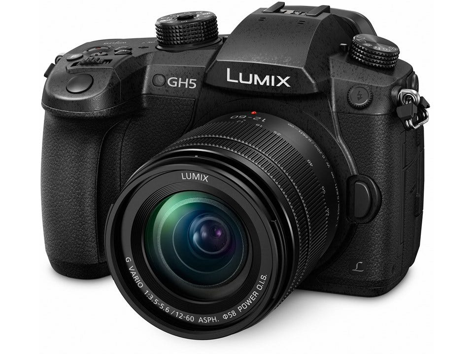
At the same time, my health started becoming a problem. Struggling with fatigue due to medication for arthritis I didn’t have the energy to make movies and my ambitions and dreams of becoming a good videographer faded. In the end, I realized that I didn’t have it in me and sold the bulk of my video gear to [VeteranerOverIsen](https://www.veteraneroverisen.com/). As I gave the camera to the buyer I felt really sad and that feeling would stick for a long time, much longer than expected. Panasonic GH5 was really my dream camera for several reasons, but I wasn’t able to use it to its full potential. So I sold it. And my drone. And my guitar (another dream crushed). And finally, I sold all my beer brewing stuff.
During the process of selling off all my video related gear and inspired by the minimalist movement, I came to the conclusion that I needed to sell all the gear I didn’t use or need and focus on one thing; photography. It was easier to handle with less energy and I could always pick up videography later. I also believed that I would be a better videographer when my technical photography skills improved.
At this point, full-frame was getting big in digital photography and available for normal people (although it wasn’t cheap by any means). I bought a used Sony A7II from [my neighbor](https://www.instagram.com/photosbyroger/) and three lenses; the Samyang 35mm f/2.8, the Sony 50mm f/1.8, and the Sony 85mm f/1.8. I fell in love with the 35mm, both the perspective and the lens, and was amazed by the quality of the 85mm. The 85mm really convinced me that not all lenses are equal. Some are nearly magical, and the Sony 85mm f/1.8 is one of those.
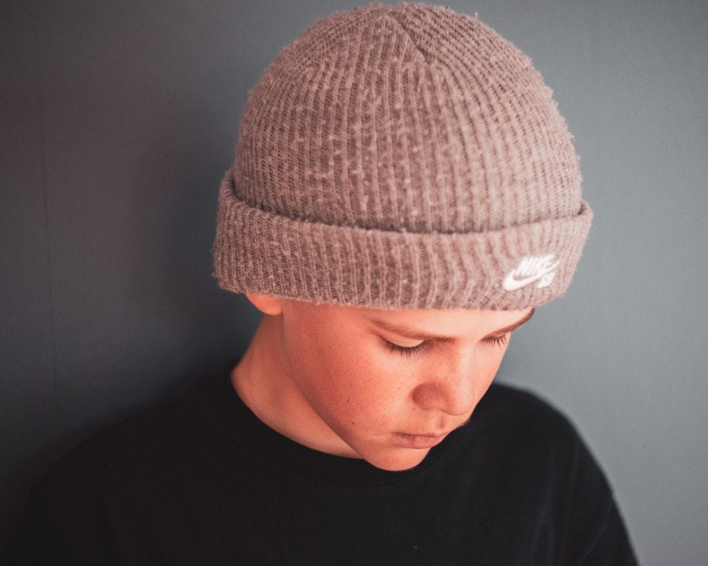
Full-frame fixed the low light problems I had using the smaller M43 sensor and the bokeh was delicious. The options for cropping were also better because of the bigger sensor and more megapixels. But the ergonomics of the Sony was not fitting my hands. And the buttons were terrible. The menu system as well. At the same time, another manufacturer was getting some attention online; Fujifilm released the X-T3 which was supposed to deliver close to Sony focus performance, better ergonomics, better color science, and a retro look that intrigued me as well. I bought the X-T30, the smaller, cheaper, and somewhat simplified brother to the X-T3 and it completely changed how viewed photography. Suddenly, several things fell into place;
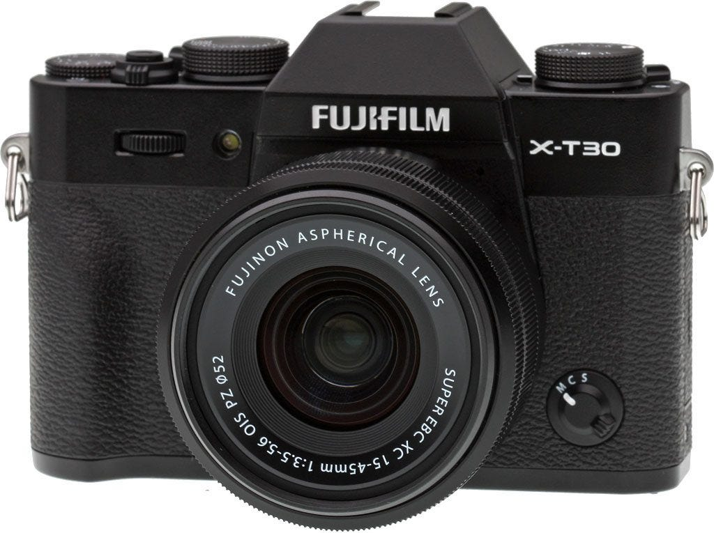
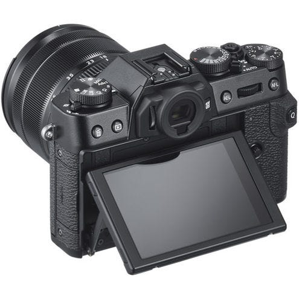
Another important piece of the Fuji puzzle was the alluring X100-series from Fuji. It has a really retro feel, small size, and a few unique features, like a built-in ND filter and a leaf shutter. I bought a used X100s, which was released in 2013, to bring along the X-T30 for our trip to Malaga this summer. Browsing through the photos from this summer shows that at least half was captured using that old camera.
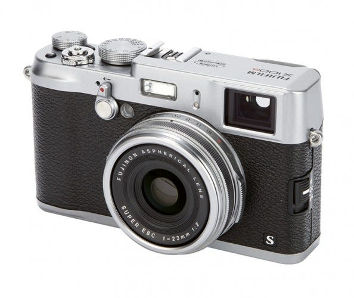
[Here’s an article ](http://weholt.org/2019/10/31/malaga-the-summer-of-2019/)with lots of photos taken during our vacation in Malaga in 2019, most of them shot with the X100s and some with the X-T30.
My mind was completely blown. The feeling of the cameras, the colors, the film simulations (more on those in a future post) and the sheer fun of using these cameras ignited my interest once again. I switched the X100s for the newer X100f and use it almost daily. The X100f will get an article all of its own later this fall.
This time I intend to take it more seriously; learn how to really take good pictures, get better at composition, understand light, and how it affects my pictures and share the results online.
That’s my journey as a photographer so far. Looking forward to the future 🙂
The Fuji brought back the retro, but in a final stab at proper retro, I once again loaded the aforementioned Canon AV-1 with a roll of Kentmere100 black & white film to see if the rising trend of shooting analog film was the way to go. The short answer is no, — it’s not. It takes too much time, I suck at manual focus and it will get really expensive the way I shoot, even when I shoot in “mindful” mode ;-). So this camera is for sale, [the ad can be seen here.](https://www.finn.no/bap/forsale/ad.html?finnkode=151489305)
For more photos & videos read [the original post](http://weholt.org/2019/10/16/my-photographic-journey-and-why-fujifilm/) over at my website :-)
*Originally published at [http://weholt.org](http://weholt.org/201*9/10/16/my-photographic-journey-and-why-fujifilm/).Follow me at instagram [https://www.instagram.com/thomaspresentererno/](https://www.instagram.com/thomaspresentererno/)